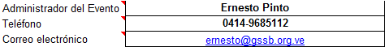
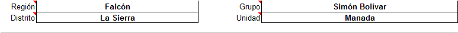
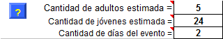
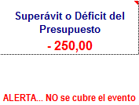
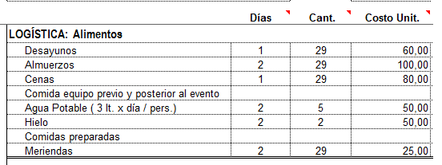
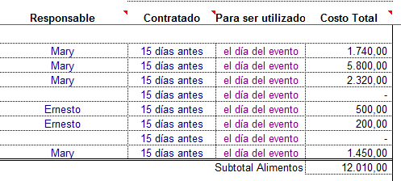

Presupuesto Evento
La lógica nos dicta que lo primero que debemos tener en claro antes de comenzar un evento es donde va a ser, cuantos días va a durar, cuanto dinero hay que invertir y de donde van a salir esos recursos.
Esto precisamente es lo que buscamos reflejar en este formulario de Presupuesto.

Paso 1
Lo primero que debemos hacer es entrar en la carpeta de Dropbox de nuestro Grupo, Distrito o Región, allí donde mismo Trabajamos con el TURCO, y hacer doble clic sobre la carpeta Sistema Administrativo
Luego esta se abrirá y nos permitirá ver todos los archivos del mismo. Allí debemos hacer clic sobre la carpeta Evento, luego haciendo click con el botón derecho del mouse pulsamos copiar, acto seguido pegar, para sí tener una copia completa del directorio Evento, con todos sus archivos. Luego podemos renombrara esta carpeta según nos parezca mejor.
Finalmente hacemos click sobre el archivo presupuesto.xls, para así comenzar a trabajar con el mismo.
Importante: Es necesario que tengamos instalado MS Excel u otro que cumpla las misma en nuestra computadora, para que todos los archivos del Sistema funcionen adecuadamente.


Al abrir nuestro archivo presupuesto.xls, este nos pedirá que confirmemos la ejecución de los Macros necesarios para que funciones el sistema.
Debemos pulsar donde dice Habilitar Macros.
Finalmente aparecerá una ventana advirtiendo que el archivo o libro, está vinculado a otros archivos, lo cual es necesario para que funcione el sistema.
En este caso debemos pulsar sobre el botón Actualizar, tal como lo muestra la imagen.

Datos Generales
Estos datos deben ser llenados a cabalidad, ya que aparecerán en los demás
formularios de control que estén dentro de la carpeta de este evento.
Es decir si se copió la carpeta y a la copia se le puso el nombre de Acantoxtrem,
para señalar así el nombre del evento, lo que coloquemos en la cabecera
del archivo de presupuesto, servirá para los demás archivos de esa
carpeta.
Comenzamos por colocar los datos de identificación del Administrador del Evento.
Los cuales son necesarios para que cualquier supervisor lo pueda contactar fácilmente.

Luego identificamos el Nivel de la Estructura responsable del Evento. Entendiendo que si se trata de una actividad Regional, no se colocorá distrito ni grupo, y así sucesivamente.
Lo que si debe colocarse siempre es la Unidad,
ya que sin importar el Nivel, la actividad siempre irá enfocada hacia
un segmento en particular. Si se trata de una actividad donde
participen todas las unidades colocamos "Grupo", si es solo para adultos, ecribimos "Adultos"
Acto seguido, estacemos la cantidad estimada de participantes (incluyendo los adultos), así como la duración en días del evento (mínimo un día).
El botón con el ? que vemos en la imagen, nos sirve para venir directamente a esta pagina de ayuda.
Finalmente escribimos el Nombre de la actividad, la Fecha de su realización y el Lugar
donde se llevará a cabo. Si al momento de hacer el presupuesto aún no
se tiene en claro alguno de estos datos, se puede colocar "por definir"
y llenarlo luego. Esto NO afectará en funcionamiento del sistema.
Estimación de Ingresos
Para la estimación de todo lo que va a ingresar al Evento debemos llenar varias casillas.
A continuación se explica detalladamente cada una de las casillas
Cuota Estimada: implemente
coloque aquí un estimado de lo que cree se debe cobrar para cubir el
evento. Esta cifra puede ser cambiada una y otra vez, hasta que el
presupuestro cuadre tal como se desee.
Es recomendable llenar primero la parte de los Egresos, y luego estimar cuanto hará falta.
Sin embargo es menester recordar que siempre se debe procurara hacer una buena gestión previa al evento, de tal manera que todod el peso del costo no recaiga sobre los propios participantes
Venta: Estas se dividen en dos categorías:
- Venta de souvenires y otros artículos: Incluyen por ejemplo; calcomanías, insignias, llaveros, franelas, chapas, etc... vendidas antes o durante el evento. Se puede incluir en este mismo renglón la venta de comidas preparadas, golosinas, y otros para recaudar fondos.
- Venta de publicidad: a través de impresos, stands en el evento, o cualquier otro medio que los organizadores consideren pertinentes.
Donaciones: Fondos recibidos para el beneficio de la organización. Se diferencia de las contribuciones, por que el donante no reciba ninguna contraprestación de nuestra parte.
Las donaciones se puede dividir en dos grandes grupos:
- Sector Privado: Son todas aquellas personas naturales o jurídicas que no forman parte del Estado. Ejemplo: Sr. Pedro Pérez, CACOINPAR, Supermercado Lau.
- Sector Público: Son todos los entes que forman parte o pertenecen al Estado. Ejemplo: Gobernación de Estado; Alcaldías y Consejos Municipales; Institutos Nacionales, Estadales o Municipales, PDVSA.
Todas las donaciones deben ser estimadas aquí, tanto las que se esperan en dinero, como las que se esperan en especies (estas últimas debe ser expresadas en Bolívares).
Contribuciones:
Son todos aquellos fondos o aportes hechos a la organización por
personas particulares, empresas u organizaciones, como parte de un
proyecto o actividad, donde ambas partes se beneficien.
Por ejemplo: Una empresa aporta dinero para comprar plantas, que luego los Scouts y el personal de esa empresa utilizarán en una campaña de arborización en conjunto.
Otros Ingresos: Aquí debemos asentar todos aquellos fondos que recibamos, y que no encajen en la definiciones anteriores.

Superávit o Déficit del Presupuesto: Si aparece en números rojos o negativos, quiere decir que el dinero previsto no alcanzará para cubrir el Evento.
Esto indica que las cuentas deben ser recalculadas, de forma que se pueda llevar acabo la actividad, sin que eso represente pérdidas para el Nivel que la ejecuta.
Estimación de Egresos
Estos son los tipos de egresos que normalmente intervienen en el presupuesto de un Evento.
Este formulario presenta una larga lista de bienes y servicios que puede ser necesarios para una actividad. Estos están ordenados en partidas como: Programa, Logística, etc... que a su vez se dividen en subpartidas como por ejemplo: LOGÍSTICA: Alimentos.
Lógicamente sólo usaremos los renglones que nos hagan falta.

Para llenar correctamente la información de los Egresos, debemos tomar en consideración lo siguiente:
Días = Aquí colocamos la cantidad de días durante los cuales se va a usar el bien, material o servicio, debe ser mínimo 1 día. En el ejemplo vemos como sólo se coloca 1 día para la cena, ya que el evento dura 2 días y termina antes de la la hora de la cena este último día.
Cant. = Cantidad a utilizar del bien o material en CADA DIA. En el ejemplo vemos como se colocan 29 en cada comida, ya que se estiman 29 personas; pero para el hielo solo se coloca 2, ya que se estiman 2 sacos de hielo grande para cada día.
Costo Unit. = Costo unitario del renglón a utilizar, POR DIA. En en ejemplo se ve como al almuerzo se le coloca 100,00, significando esto que se estima un monto de Bs. 100 para cada almuerzo por cada día.

Responsable = Persona encargada de contratar el servicio, o adquirir el bien o material a utilizar en el evento. Es necesario que esto se establezca con suficiente tiempo, para evitar sobrecargar a una sola persona con mucho trabajo.
Contratado = Fecha en la que debe contratarse el servicio, o adquirir el bien o material a utilizar en el evento.
Para ser utilizado = Momento en el que debe usar el servicio o bien en el antes, durante o luego del evento.
Costo Total = Costo total luego de multiplicar los días de uso, por la cantidad, por el costo unitario. En el ejemplo el total por almuerzos es Bs. 5.800, que resulta de multiplicar 2 días x 29 almuerzos diarios x bs. 100 cada almuerzo.
Ayudas para este archivo

Pulsado sobre este ICONO, ubicado en la parte superior derecha, abriremos la sección de la página web de ayuda, creada para este sistema.
Nota: es impresindible que para acceder a esta página, nuestro computador esté conectado a Internet.